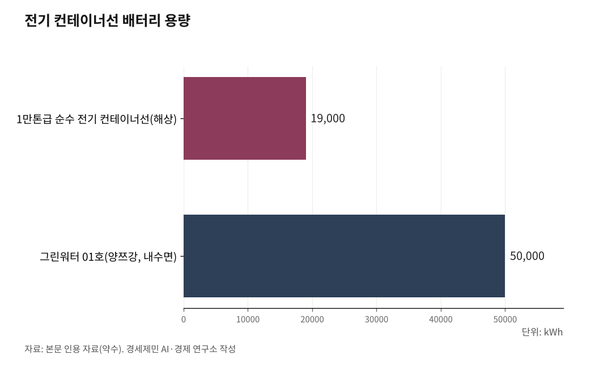

세계 최초 1만톤 전기 컨테이너선 中 상업 운항… 인천항 피더는
中 '닝위안뎬쿤' 4월 15일 닝보저우산항에서 자싱항으로 출항
127.8m·740TEU·배터리 1만9000kWh, 연 CO2 1400톤 감축

中 연안 해운 전기화 가속… 인천항 친환경 피더 전환 시험대
중국이 세계 최초로 1만톤급 순수 전기 스마트 컨테이너선을 상업 노선에 투입했다. 4월 15일 오후 '닝위안뎬쿤(寧遠電鯤, Ning Yuan Dian Kun)'이 저장성 닝보저우산항 베이룬항구구역에서 출항해 자싱항 자푸항구구역으로 향했다.
중국 연안 해운 전기화 시대가 열렸다. 인천항에서 중국까지 오가는 피더선(feeder ship, 대형 항만과 소형 항만 사이를 오가는 지선 운송선)과 카페리(car ferry, 차량과 여객을 함께 싣는 여객화물선)는 여전히 화석연료에 의존한다. 인천항 친환경 전환 시험대가 시작됐다.
1. 세계 최초 1만톤급 순수 전기선… 742TEU, 배터리 1만9000kWh
닝위안뎬쿤은 중국 장시장신조선(Jiangxi Jiangxin Shipbuilding)이 건조하고 상하이선박설계연구원(Shanghai Merchant Ship Design and Research Institute)이 자체 개발·설계했다. 길이 127.8m, 폭 21.6m, 깊이 10.5m, 흘수 6.2m다. 742TEU(Twenty-foot Equivalent Unit, 20피트 표준 컨테이너 1개 기준 단위)를 실을 수 있다. 최고속도는 11.5노트(knot, 시속 약 21.3km)다.
동력은 표준 배터리 컨테이너 10개에서 나온다. 총 용량은 약 1만9000kWh(킬로와트시)로 가정용 전기차 약 300대 분량이다. 875kW(킬로와트) 영구자석 모터 2기가 추진한다.
충전은 고압 육상전원 연결과 배터리 컨테이너 통째 교체 방식을 병행한다. 태양광 패널도 보조 전력을 공급한다. 항해, 정박, 하역 전 과정에서 탄소를 배출하지 않는다. 연간 연료 580톤을 줄이고 이산화탄소(CO2) 1400톤 이상을 감축한다.

2. 자율운항 탑재… 자매선 6월 인도, 선대 55% 녹색 전환
자율운항 기능도 탑재했다. 개활(開豁) 수역(장애물 없는 넓은 바다)에서 자율 항해, 실시간 360도 모니터링, 전천후 시각 인식, 경로 계획, 자율 충돌 회피, 적응형 주행 모드를 전환할 수 있다.
선명의 '쿤(鯤)'은 장자에 나오는 거대한 물고기다. 자매선 '닝위안뎬펑(寧遠電鵬)'의 '펑(鵬)'은 같은 고전의 거대한 새를 뜻한다. 뎬펑은 5월 시험운항을 거쳐 6월 인도 예정이다. 두 척이 모두 투입되면 정기 노선에서 규모화된 녹색 해운 운영이 시작된다.
운영사 닝보원양해운(Ningbo Ocean Shipping Co., NBOSCO)은 저장성 항만그룹(Zhejiang Seaport Group) 자회사다. 상하이증권거래소 상장사(티커 601022)로 2024년 11월 기준 선박 47척을 운영한다. 녹색·에너지효율 선박이 29척으로 전체 선대의 54.7%를 차지한다.
3. 중국 국가 시범사업 지정… IMO 넷제로보다 한발 앞서
닝위안뎬쿤은 단순한 선박 한 척이 아니다. 중국 정부가 연안 해운 탄소중립 모델을 복제·확장하려는 국가 전략 산물이다.
2025년 중국 정부는 '740TEU 순수 전기 컨테이너 해상선박 연구응용 시범사업'을 '녹색저탄소 선진기술 시범사업 목록(2차)'에 포함했다. 국가 시범사업으로 지정한 것이다.
앞서 2025년 중국원양해운(COSCO)이 양쯔강에서 '그린워터 01호'를 운항했다. 길이 120m, 배터리 5만kWh(최대 8만kWh 확장 가능)인 내수면 전기 컨테이너선이었다. 닝위안뎬쿤은 여기에서 한 단계 더 나아가 해상 연안 노선에 순수 전기선을 투입한 것이다.
중국은 이중탄소 목표(2030년 탄소 정점, 2060년 탄소중립)를 추진한다. 국제해사기구(International Maritime Organization, IMO)도 2023년 국제 해운 2050년 전후 넷제로(net-zero, 온실가스 순배출 제로) 전략을 채택했다. 2030년까지 2008년 대비 최소 20%(최대 30%) 감축, 2040년 최소 70%(최대 80%) 감축이 중간 점검 목표다.
2025년 4월에는 5000총톤(GT, Gross Tonnage) 이상 대형 원양선박에 연료기준과 탄소 가격 체계를 의무화하는 넷제로 프레임워크(Net-Zero Framework, 탄소중립 규제 체계)를 승인했다. 2025년 10월 채택, 2027년 발효 예정이다.
중국은 IMO 규제보다 한발 앞서 연안 피더부터 전기화를 밀어붙이고 있다. 시범사업에서 상업 운항까지 1년 만에 달성한 속도가 이를 보여준다.
4. 인천항 AMP 5대 중 2대만 가동… 선박 8척 중 수전설비 2척뿐
인천항은 대중국 교역의 최전선이다. 2024년 컨테이너 물동량 355만8455TEU 가운데 약 64%가 중국과 오갔다. 한중 카페리 노선 10개로 2024년 44만4420TEU 화물을 실어날랐다. 인천에서 칭다오까지 약 590km, 웨이하이까지 약 370km다.
중국 연안에서 전기 피더선이 확산되면 인천-중국 항로에서도 친환경 전환 압력이 커진다.
그런데 인천항 현실은 다르다. 인천항에 설치된 육상전원공급설비(Alternative Maritime Power, AMP)는 저압용 68기, 고압용 3기다. 문제는 이용률이다.
인천항 국제여객부두 3개 선석에 AMP 5대가 설치됐지만 실제 사용 중인 것은 2대에 불과하다. 인천항 국제여객부두를 이용하는 선박 8척 가운데 수전설비(受電設備, AMP에서 전력을 받는 선박 측 장치)를 갖춘 선박은 2척뿐이다. 2번 선석 AMP 2대는 설치 이후 4년간 단 한 차례도 사용되지 않았다. 수전설비 설치 비용이 10억원에 달하고 화물 적재 공간이 줄어든다는 이유로 선사가 기피한다.
한국 정부는 2019년 12월 국내 13개 주요 항만 248개 선석에 AMP 구축(9322억원 투입) 중기 계획을 발표했다. 2020년 12월에는 '2030 그린십-K 추진전략'을 확정하고 2030년까지 공공·민간 선박 528척을 친환경으로 전환하겠다고 했다.
해양수산부는 2021년 '해양수산분야 2050 탄소중립 로드맵'도 수립해 해운 분야 탄소 배출을 2018년 101.9만톤에서 2050년 30.7만톤으로 줄이겠다고 했다. 계획은 있다. 그러나 인천항 연안·피더 전기화는 아직 실증 이전 단계다. 중국이 1만톤급 전기선으로 상업 운항을 시작한 것과 시차가 벌어지고 있다.
5. 해상풍력 6.2GW → 신송도 변전소 → 항만 전기화… 과제는 연결
서해안 HVDC(High Voltage Direct Current, 초고압직류송전) 620km(8GW, 7조9000억원)의 최종 도착지가 인천이다. 신송도 변전소(345kV)가 2026년 9월 가압(加壓, 변전소에 전기를 처음 흘려보내는 것), 2028년 2월 준공된다.
인천 앞바다 해상풍력 6.2GW(약 31조원)가 경인경제권에 전력을 공급한다. 이 재생에너지 인프라가 항만 육상전원과 선박 전기화에 연결되면 인천항은 녹색 복합물류 허브로 전환할 수 있다.
해상풍력 전력을 신송도 변전소에서 받아 항만 AMP로 보내고 전기 피더선을 충전하는 공급 체계를 설계하는 일이 과제다.
※ 이 기사는 AI 프로그램 클로드를 활용해 작성했습니다.
·"2030년까지 248개 선석에 육상전원공급설비(AMP) 구축", 해양수산부, 2019.12.5, https://eiec.kdi.re.kr/policy/materialView.do?num=195324&topic=
·"2023 IMO Strategy on Reduction of GHG Emissions from Ships", IMO, 2023.7.7, https://www.imo.org/en/ourwork/environment/pages/2023-imo-strategy-on-reduction-of-ghg-emissions-from-ships.aspx
·"IMO approves net-zero regulations for global shipping", IMO, 2025.4.11, https://www.imo.org/en/mediacentre/pressbriefings/pages/imo-approves-netzero-regulations.aspx
·"World's largest pure electric intelligent container ship enters service in China", Xinhua, 2026.4.15, https://english.news.cn/20260415/4387c6d931fe4d91b2a3763fc5899824/c.html
·"World's largest, China's first 10,000-ton all-electric smart container vessel delivered", Global Times, 2026.4.15, https://www.globaltimes.cn/page/202604/1359035.shtml
·"VESSEL REVIEW | Ningyuan Dian Kun", Baird Maritime, 2026.4, https://www.bairdmaritime.com/shipping/boxships/vessel-review-ningyuan-dian-kun-chinese-electric-feeder-ship-fitted-with-autonomous-navigation-technology
·"운영 4년된 '인천항 AMP' 선사들 외면", 경인일보, 2024.6.23, https://www.kyeongin.com/article/1696965
#닝위안뎬쿤 #전기컨테이너선 #닝보저우산항 #순수전기선박 #녹색해운 #IMO탄소중립 #인천항 #연안피더운송 #해상풍력 #항만육상전원